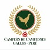

<div class="side" (mouseover)="toggleSidebar()" (mouseout)="toggleSidebar()" #sidebar>
<p><a routerLink="/home"></a></p>


<div class="ul-nav"> 
<ul >
    <li><a routerLink="/somos"><i class="fa fa-user"></i> <br />Quiénes Somos</a></li> 
    <li><a routerLink="/editorial"><i class="fa fa-book"></i> <br />Editorial  </a></li>
    <li><a routerLink="/historia"><i class="fa fa-history"></i> <br />Historia</a></li>
    <li><a routerLink="/participantes"><i class="fa fa-group"></i> <br />Participantes</a></li>
    <li><a routerLink="/campeonatos"><i class="fa fa-trophy"></i> <br />Campeonatos</a></li>
    <li><a routerLink="/revista"><i class="fa fa-newspaper-o"></i> <br />Revista</a></li>
  </ul>
</div>


</div>


